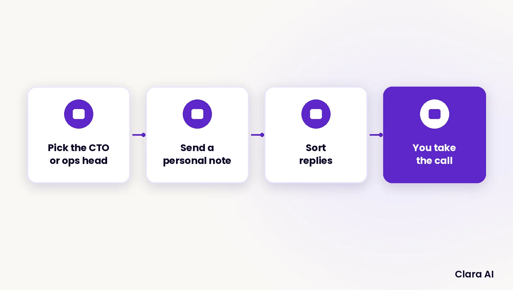

A LinkedIn outreach agent for IT services companies finds the CTOs, operations heads and founders who buy your kind of work, sends short personal notes from your own profile, follows up and passes warm replies to you on WhatsApp. It gives a delivery-heavy firm a steady stream of first conversations while your team keeps the discovery calls and proposals.
Most software development, IT consulting and managed services firms grow through referrals, past clients and a few partners. That works until a big project ends or the team is fully booked. Prospecting is the first thing to slip when delivery gets busy, and an agent does that one repeatable job every working day.
IT services buyers are busy and hear from many vendors. The usual problems are:
LinkedIn fits because your buyers are already there, your profile shows your work, and you can reach the right role at the right company without a warm introduction.
Think of it as a careful business development assistant who works in a browser and reports back. It handles the steps that are easy to skip:

It works best when your offer is clear and you can describe the buyer in one line. Good fits include:
It is a weaker fit if you sell to consumers, if every project is a different offer, or if you cannot yet say who you help and why.
IT services firms usually weigh four ways of getting new conversations on LinkedIn:
| Option | Your time each week | Consistency | Personal tone | Who handles replies |
|---|---|---|---|---|
| Founders or tech leads do it themselves | High | Drops when delivery peaks | Strong | You |
| Junior business development hire | Medium (training and managing) | Good once trained | Depends on the person | The hire, then you |
| Self-serve automation tool | Medium (setup, copy, checking) | Good | Often generic | You sort them |
| Outreach agent run for you | Low (weekly review) | Every working day | Personal, from approved facts | Sorted, warm ones sent to you |
For a deeper look at tools versus done-for-you services, read LinkedIn automation vs LinkedIn agency. If you are weighing a hire, see LinkedIn outreach agent vs SDR hire.
CTOs spot generic pitches fast. Three habits help:
It also matters for account safety. LinkedIn's User Agreement restricts automated activity that breaks its rules, and its help page on prohibited software and extensions explains why. High-volume blasting is the real risk. Any automation carries some risk, so keep it personal and paced, and keep a person checking the work.
A good start takes a short call and a few clear answers. Bring these:
Our step-by-step guide on how to book B2B sales meetings on LinkedIn covers what to send and when to ask for the call.
We share only dated, real numbers, and we have none yet from an IT services client. For B2B outreach in general, Sanjeet Ray, a business coach, saw 149 invites, 43 connections, 12 conversations and 3 warm leads in October 2026. Haique Surfaces reached 345 people as of 21 Oct 2026, with 107 accepting (31%) and 14 replying. In IT services, one new client can mean a long project, so even a few real conversations a month can matter.
Your results will depend on your offer, your niche and how clear the target list is. Judge it over a full month on four numbers: people reached, acceptances, replies from real buyers and booked calls.
Clara AI is a 14-person AI team that builds and runs agents for 19 businesses. We set up the AI LinkedIn Outreach Agent and run it for you, so you do not need a new hire. A person on our team checks the work, and warm replies reach you on WhatsApp. Tell us who you help and who you want to reach, and we aim to show you a first demo within 7 days.
If buyers also find IT firms through Google or ChatGPT, our AI SEO Agent publishes a new post on your site every day. On our own blog, organic sessions rose 28% in 10–25 Oct 2026 compared with 24 Sep–9 Oct. Need something else automated? See our custom AI agents.